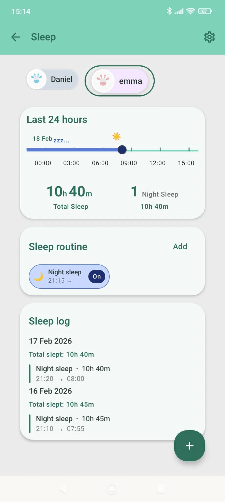

Baby Naps, Transitions and Sleep From 0 to 2 Years
From tiny newborn catnaps to one solid toddler nap, sleep changes fast in the first two years. Here is a calm roadmap you can actually use.

If baby sleep has felt confusing, you are not doing anything wrong. The first two years are full of shifts: nap counts drop, wake windows stretch, and routines that worked last month suddenly stop working.
The goal is not a perfect schedule. The goal is a rhythm that helps your baby rest and helps your family breathe.
What changes between 0 and 24 months
Sleep is a moving target in this stage. Babies do not transition because we decide to. They transition because their brain and body are maturing.
- In early months, sleep is short and spread across the day and night.
- Through the first year, naps begin to consolidate.
- In the second year, most toddlers settle into one daytime nap.
It is normal for progress to look messy for a week or two during each transition.
Sleep by stage: a practical view
0 to 3 months: many short sleeps, frequent waking
The newborn stage can feel like a full day of mini cycles. Sleep comes in short pieces, and that is biologically normal.
What this stage often looks like:
- About 4 to 6 naps, with changing lengths.
- Frequent night waking, especially for feeding.
- No stable day-night rhythm yet.
What helps most: Keep evenings quiet, bring in daylight during the morning, and repeat simple soothing patterns so your baby starts to associate them with rest.
4 to 6 months: structure starts to appear
This is often when parents start to feel a little rhythm coming in. Sleep may still wobble, but patterns begin to show up.
What this stage often looks like:
- About 3 to 4 naps most days.
- Longer nighttime stretches in some babies.
- Temporary regressions around growth or development leaps.
What helps most: Use a short bedtime routine you can repeat every night: dim lights, calm voice, feed, cuddle, bed.
6 to 9 months: three naps often become two
This is a classic transition window. Many babies start fighting the third nap before they fully drop it.
What this stage often looks like:
- The third nap gets very short, late, or inconsistent.
- Bedtime shifts later when that last nap happens too late.
- Some fussiness as wake windows lengthen.
What helps most: Shift gradually and protect bedtime. An earlier bedtime for a few days can reduce overtiredness while the body adjusts.
9 to 14 months: two naps usually work best
For many families, this is the most stable sleep phase of the first year.
What this stage often looks like:
- One morning nap and one afternoon nap.
- A more predictable bedtime rhythm.
- Tough evenings when one nap is missed.
What helps most: Keep both naps reasonably protected and avoid stretching late-day wake time too far when naps were short.
14 to 18 months: the transition from two naps to one
This is often the hardest transition in this age range, and mixed days are expected.
What this stage often looks like:
- Some days your child naps once, other days twice.
- Nap refusal on one day and deep sleep the next.
- Overtired behavior in the late afternoon.
What helps most: Anchor one midday nap, stay flexible for a short adaptation period, and move bedtime earlier on rough days.
18 to 24 months: one nap and a predictable bedtime rhythm
At this stage, most toddlers do well with one midday nap and a consistent evening routine.
What this stage often looks like:
- One daytime nap, usually around midday.
- More predictable nights when routine is steady.
- Bedtime resistance linked to growing independence.
What helps most: Keep limits clear and your tone warm. Connection usually works better than pressure at bedtime.
Nap transitions: signs your baby may be ready
- One nap is consistently refused for 1 to 2 weeks.
- Bedtime gets very late because the last nap ends too late.
- Your baby takes a long time to fall asleep at naps or bedtime.
- Night waking increases after daytime sleep shifts.
Read these signs together, not one by one. A single hard day is not always a transition.
How to handle transitions without chaos
- Shift gradually, usually by 10 to 20 minutes every few days.
- Use an earlier bedtime during adaptation weeks.
- Protect a calm pre-sleep routine even when the day was messy.
- Give each change at least 7 to 10 days before judging results.
- Track naps and night sleep patterns so decisions are based on trends, not one difficult day.
What is normal at night in the first two years
Night sleep improves over time, but occasional wakings remain common, especially around growth spurts, teething discomfort, illness, travel, and big developmental leaps.
You are not failing if your baby wakes. Sleep is developmental, not a parenting score.
When to talk with your pediatrician
Reach out if sleep concerns persist and affect feeding, mood, growth, breathing, or family functioning. It is always okay to ask for support early.
The part parents often forget
Your baby is learning how to sleep, and you are learning how to read your baby. Both processes take time.
There is no single perfect routine for every family. A good routine is one you can sustain, one that feels safe, and one that lets everyone rest a little better week by week.
Track naps, wake windows, and bedtime in one place to make transitions smoother.